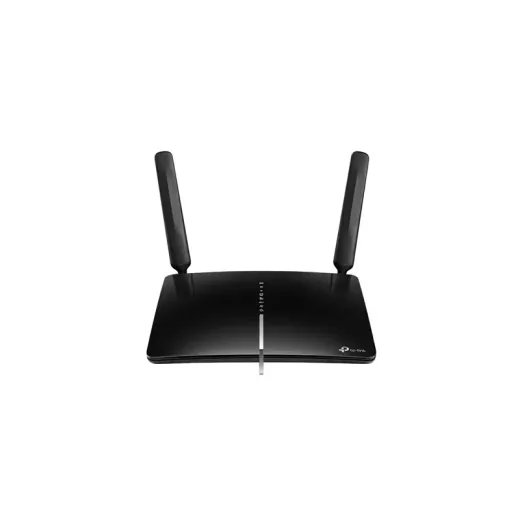
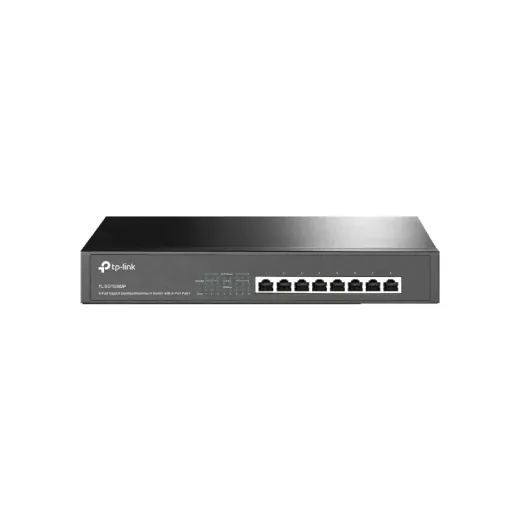
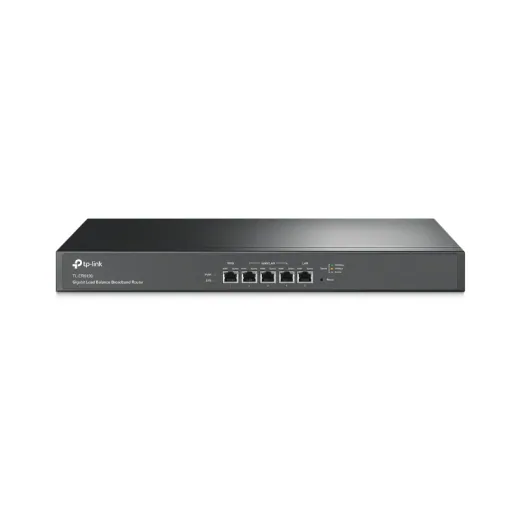
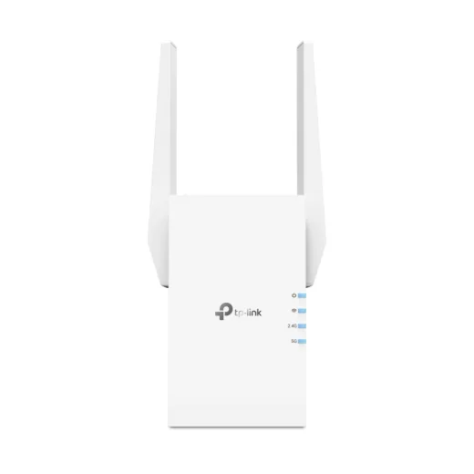
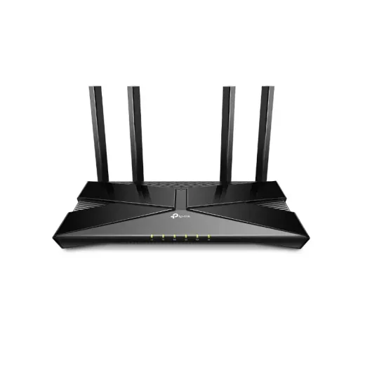
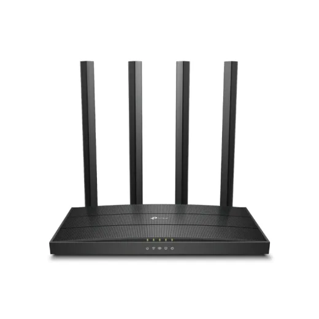
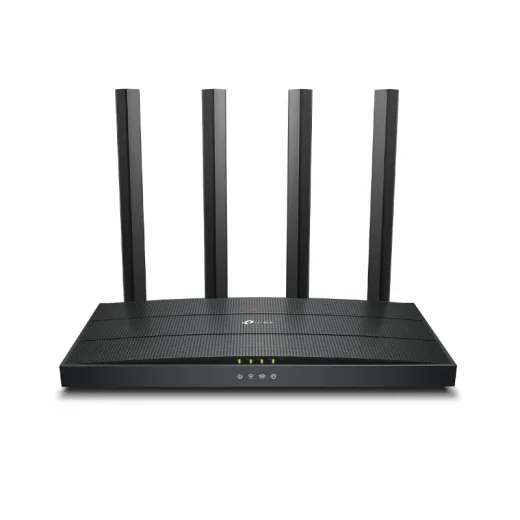
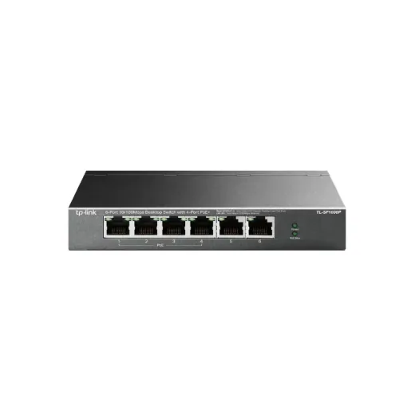

Tp-Link · Modelo 300MBPS
Router Tp-Link 300mbps 4g Lte+Cat6 Tigo Inalambrico 2.4ghz Ac1200
L 3,995
En Acosa
Precio en cada tienda
| Tienda | Precio | Antes | Disponibilidad | |
|---|---|---|---|---|
| Acosa | L 3,995 | — | Agotado | Ver en tienda › |
Precios referenciales tomados de cada tienda el 14 de noviembre de 2026. El precio válido es el que muestra la tienda al comprar.
Otros routers y redes Tp-Link

Switch 8 Puertos 10/100/1000 Mbps Poe+ Tp-Link Gigabit Tl-Sg1008mpL 3,649En Acosa
Switch 5 Puertos Wan/Lan 800mbps Tp-Link Gigabit Tl-Er5120L 2,849En Acosa
Repetidor Tp-Link 3000Mbps Dual Band 5Ghz Dual Band Ax3000L 2,839.01En Acosa
Router Tp-Link 2402Mbps Inalambrico 5Ghz Ax3000 Dual Band Wifi 6L 2,429En Acosa
Router Tp-Link 1900Mbps Inalambrico-N 2.4Ghz Doble Banda AC1900 Mu-MimoL 1,549En Acosa
Router Tp-Link 1201Mbps Inalambrico 5Ghz Ax1500 Dual Band Wifi 6L 1,495En Acosa
Switch 6 Puertos 10/100 Mbps C/Poe+ 4 Puertos Tp-Link Para Escritorio Tl-Sf1006PL 1,299.01En Acosa Switch 5 Puertos 10/100 Mbps C/Poe+ 4 Puertos Tp-Link P/Escritorio Tl-Sf1005PL 1,119En Acosa
Switch 5 Puertos 10/100 Mbps C/Poe+ 4 Puertos Tp-Link P/Escritorio Tl-Sf1005PL 1,119En Acosa